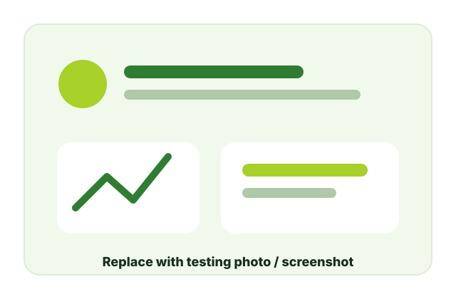

Insert final number of respondents.
Summary of findings and interpretation
This page is prepared for the final usability testing results. Replace the sample values after collecting actual respondent data.
Enter final average SUS score.
Improved goal screen guides users.
Workout flow needs clear recovery actions.
Usability Findings
Summary table
Update this after checking the completed SUS survey and open-ended feedback.
| Finding | Evidence/Source | Discussion | Action |
|---|---|---|---|
| Goal selection became clearer | Heuristic evaluation and prototype revision | The added goal screen gives users a more guided starting point. | Keep short descriptions and distinct goal cards. |
| Workout flow needs strong control | Heuristic evaluation issue | Users should not feel locked into a wrong routine or selection. | Add Back, Edit, Cancel, and confirmation states. |
| Feedback messages are needed | Expected usability test observation | Users may not immediately know if their entries or choices were saved. | Add success, error, and progress messages. |
| Visual consistency supports learnability | Interface review | Consistent cards, labels, and buttons reduce mental effort. | Standardize colors, icons, spacing, and button hierarchy. |
Discussion
Interpretation of results
The initial evaluation suggests that Fit-Balance has a strong concept because it combines fitness goal-setting, workout organization, and nutrition awareness in one prototype. The added goal screen improves the onboarding experience by helping users immediately understand what path they can take, such as muscle gain, fat loss, push/pull, or full-body routines.
However, the heuristic evaluation also shows that usability depends not only on available features, but on how much control and feedback the interface gives to users. In the workout screens, users should be able to go back, edit choices, cancel actions, and clearly understand the result of each interaction. These improvements can make the prototype feel safer, clearer, and easier to learn.
Once usability testing is completed, the SUS results and respondent comments should be compared with these heuristic findings. Repeated issues from both methods should be treated as higher-priority design concerns.
Evidence Gallery
Testing and documentation photos
Replace the placeholders with actual photos or screenshots from your data gathering.
